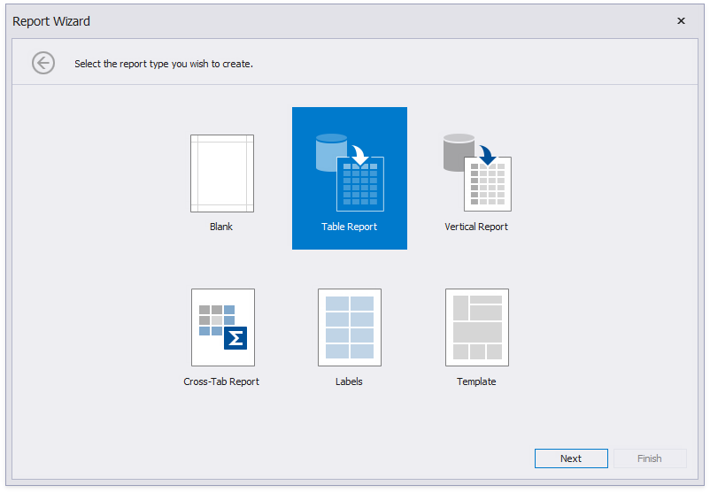
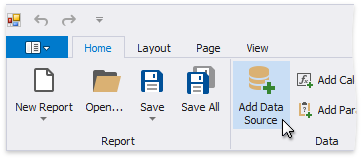
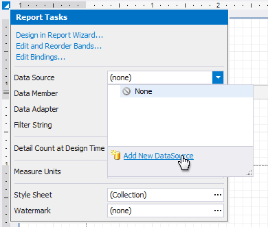
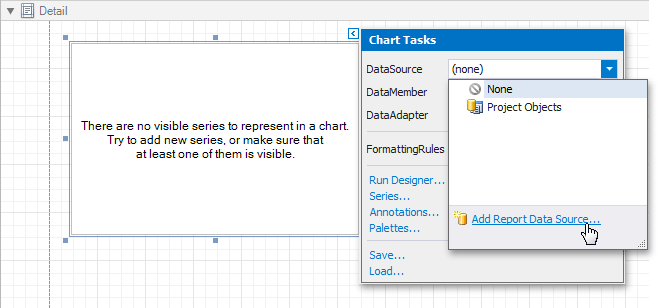

Data Source Wizard
The Data Source Wizard enables you to configure a data source and retrieve the required data. It supports the following data source types:
-
Obtains data from all major data providers (Microsoft SQL Server, XML data, Microsoft Access, Oracle, etc.).
-
Supports binding to a Microsoft ADO.NET Entity Framework data source.
-
Connects to a data object.
-
Obtains data from Microsoft Excel workbooks (XLS, XLSX or XLSM files) or CSV files.
-
Connects to JSON-formatted data.
-
Allows you to bind to XPO data.
-
Allows you design a report that is not bound to a data source.

The Data Source Wizard allows you to do the following:
Add a new data-bound report to your application using the Report Wizard, which contains the Data Source Wizard pages.

Bind an existing report or its Detail Report band to data. To invoke this Wizard, click Add Data Source on the Ribbon's Home page.

Alternatively, click the report's smart tag, expand the DataSource property's drop-down menu and click Add Report Data Source.

Connect the Chart, Cross Tab and Sparkline report controls to individual data sources.
You can invoke the Data Source Wizard using the Add Data Source command on the Chart | Design contextual page.

You can invoke the Data Source Wizard using the DataSource property in the chart's smart tag.
